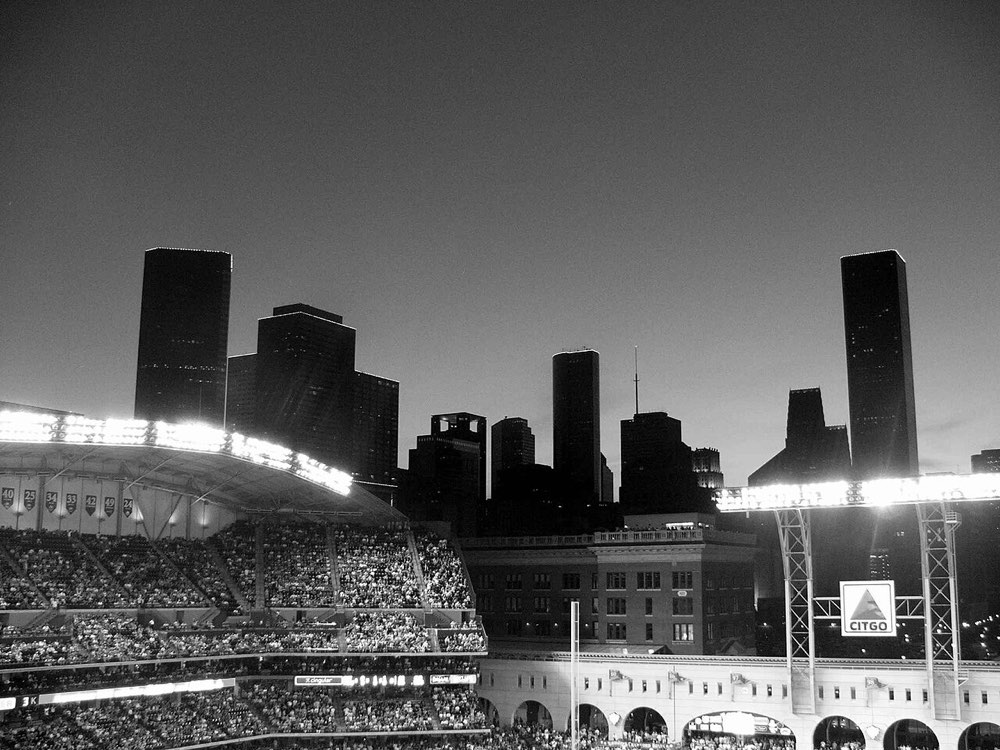

The board
Ten cities, one number each, every day — and a full family of markets around it. Every line is peer-to-peer: another player holds the other side, and the official data decides who's right.

The flagship family
The core market. Each city posts a daily line for five categories — call the official number over or under. Half-point lines mean there's never a push: the number is either over the line or it isn't.
| City | Total Crime | Violent | Vehicle Thefts | Burglaries | Robberies |
|---|---|---|---|---|---|
| New YorkNYC | 512.5 | 78.5 | 88.5 | 61.5 | 44.5 |
| ChicagoCHI | 401.5 | 53.5 | 121.5 | 44.5 | 31.5 |
| Los AngelesLA | 356.5 | 61.5 | 94.5 | 52.5 | 28.5 |
| HoustonHOU | 287.5 | 44.5 | 66.5 | 41.5 | 22.5 |
| PhiladelphiaPHI | 243.5 | 41.5 | 47.5 | 29.5 | 19.5 |
| DallasDAL | 198.5 | 31.5 | 52.5 | 37.5 | 17.5 |
| PhoenixPHX | 176.5 | 29.5 | 58.5 | 33.5 | 16.5 |
| MiamiMIA | 164.5 | 27.5 | 33.5 | 24.5 | 15.5 |
| AtlantaATL | 141.5 | 24.5 | 39.5 | 22.5 | 13.5 |
| St. LouisSTL | 88.5 | 18.5 | 26.5 | 14.5 | 9.5 |
City versus city
Instead of one city against a line, the whole board competes. Pick from the field of ten — payouts scale with how contrarian your pick is.
Which of the ten cities reports the most qualifying incidents? New York usually leads — which is exactly why the value hides elsewhere.
The flip side — which city stays quietest, adjusted per capita so small boards compete fairly. A market for the calm as much as the chaos.
Pure momentum: which city jumps the most versus its own yesterday, in percent? Rewards reading the weather, the calendar, and the news cycle.
Precision play
Skip over/under and call the bucket the final number lands in. Narrower target, bigger payout — the sharpest way to express a strong read on one city.
One bucket wins; every bucket is its own peer-to-peer pool. Multiples shown are illustrative — they float with how the crowd distributes.
Severity-weighted
Raw counts treat a shoplifting report and a robbery the same. The CrimeLine Score doesn't — every qualifying incident is weighted by severity, so Score markets trade on how a city's day actually felt.
The same over/under mechanic, on the severity-weighted Score instead of the raw count. A day heavy on minor reports can go over on count and under on Score — two different markets, two different reads.
One market to rule them all: the weighted Score summed across every launch city, rolled into a single daily number. The macro trade — a position on the country's whole day, not one city's.
The full severity ladder, worked examples, and the fixed-rubric guarantee live in the rulebook →
From line to payout
Every market settles from a single licensed data provider — the same feed for everyone, on every market, every day. No house discretion, nothing to argue with.
At noon ET the following day, the number is locked: raw counts for count markets, the weighted Score for Score markets. Late report revisions after the snapshot don't change a settled market.
The settlement number posts to Solana and winning positions are paid in USDC automatically — no claims process, and anyone can audit any result, forever.
Devnet beta
Markets aren't live yet — CrimeLine is in devnet beta. Connect your Solana wallet now and your seat is ready the moment the first lines post.